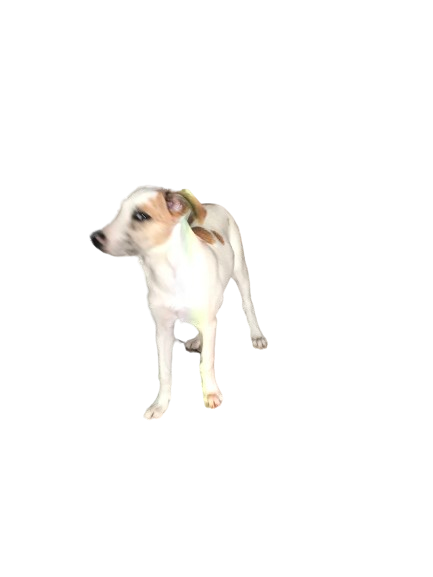

O que irei ver?
Prepare-se para se encantar com a beleza, graça e personalidade única da Safira, enquanto ela conquista nossos corações com suas travessuras e momentos fofos.
Módulo 01: diário da Sa
Módulo 02: fotos e vídeos
Módulo 03: sobre a raça
VENHA CONHECER A SAFIRA COM A GENTE
Uma jornada emocionante e repleta de alegria
Junte-se a nós para uma experiência única e cheia de encanto, onde você terá acesso exclusivo não apenas às fotos encantadoras da Safira, mas também ao seu diário especial. Ao se inscrever, você terá a oportunidade de conhecer a Sa de perto e mergulhar em suas aventuras, registradas em seu diário com histórias divertidas, reflexões e momentos preciosos.